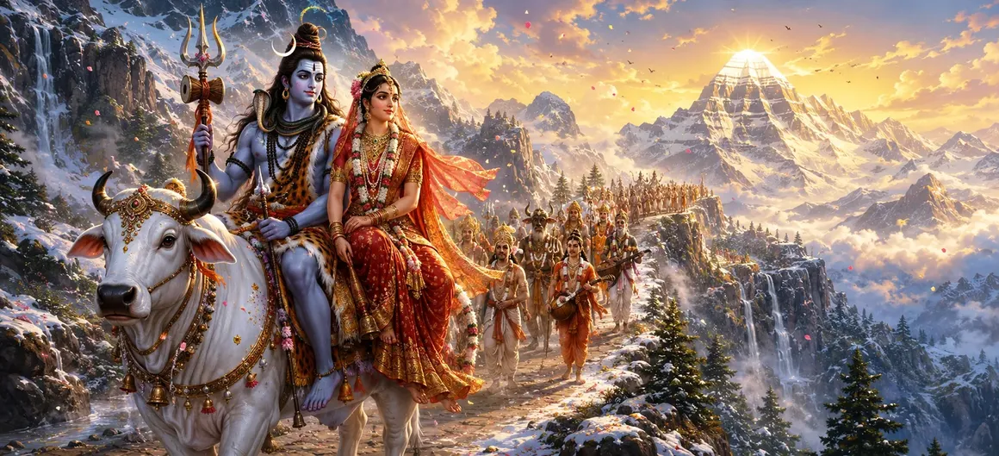

After receiving the blessings of Himālaya and Menā and completing the sacred wedding festivities, Lord Shiva and Goddess Pārvatī continued toward Kailāsa. Nandī, the devoted gaṇas, sages, gandharvas, and celestial attendants accompanied the divine couple. Their journey through majestic mountains, sacred forests, and holy rivers became a celebration of the eternal union of Shiva and Śakti.
Lord Shiva moved at the centre of the magnificent procession with Goddess Pārvatī beside Him. Nandī proceeded faithfully before them, while the gaṇas surrounded their Lord with devotion and joy. Sacred drums, conches, and celestial instruments resounded through the mountain valleys.
The path toward Kailāsa passed through snow-covered peaks, peaceful forests, and valleys filled with flowering trees. Crystal-clear streams flowed beside the road, and gentle winds carried the fragrance of blossoms from the sacred groves.
As the divine couple passed, the trees bent their branches as though offering salutations. Birds sang melodious songs, wild animals became peaceful, and fragrant flowers opened even outside their natural seasons. Nature itself appeared to recognize and welcome the eternal Lord and Mother of creation.
Goddess Pārvatī looked upon the magnificent surroundings with wonder and happiness. Lord Shiva lovingly described the holy mountains, rivers, forests, and places of meditation situated along their path. Each sacred location carried the blessings of ancient sages and devoted worshippers.
Sages living in hermitages along the mountain path learned of the divine couple’s arrival and came forward to offer worship. They presented sacred water, fruits, flowers, and prayers while praising Shiva and Pārvatī as the eternal source of knowledge, power, and liberation.
Every spiritual journey brings the devotee closer to wisdom, peace, and divine awareness.
Nature responds with peace and abundance wherever divine harmony is established.
Their journey reveals the inseparable companionship of consciousness and divine energy.
After travelling through the sacred mountain regions, the divine procession finally approached Kailāsa. Its brilliant snow-covered peaks shone like crystal beneath the celestial light. The mountain appeared peaceful, majestic, and untouched by ordinary worldly disturbance.
Pārvatī gazed upon the sacred abode with reverence and joy. She understood that Kailāsa would now become the centre of their divine household and a refuge for sages, devotees, celestial beings, and all who sought the grace of Shiva.
The journey to Kailāsa represents the inward journey toward spiritual stillness. When devotion accompanies wisdom and our actions remain guided by righteousness, every step can lead us closer to the sacred abode within our own hearts.
The gaṇas who had remained at Kailāsa received news that Lord Shiva was returning with Goddess Pārvatī. Filled with excitement, they decorated the sacred pathways with flowers, leaves, lamps, and auspicious symbols.
They gathered at the entrance of the divine abode with musical instruments and offerings. Their hearts overflowed with happiness, for their Lord was no longer returning alone—the Mother of the universe was arriving to grace Kailāsa with her presence.
As Shiva and Pārvatī drew nearer, the entire region of Kailāsa became filled with extraordinary radiance. Celestial flowers descended from the sky, sacred drums sounded without being touched, and an atmosphere of peace spread throughout the mountain.
The arrival of Pārvatī marked a new beginning for the sacred abode. Kailāsa would now reflect not only Shiva’s profound renunciation and stillness but also the warmth, compassion, and creative power of the Divine Mother.
“The journey to the Divine begins with devotion, continues through wisdom, and reaches fulfilment in inner peace.”
Lord Shiva and Goddess Pārvatī travelled through sacred mountains, forests, rivers, and hermitages until the radiant peaks of Kailāsa appeared before them. As the gaṇas prepared to welcome the Divine Mother, a new chapter in the eternal household of Shiva and Śakti was about to begin.